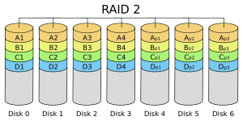
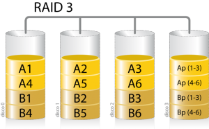
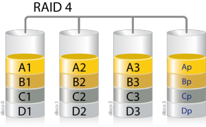
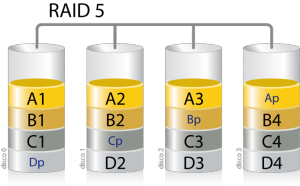
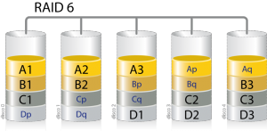

Стандартни RAID нива
RAID 0
Минимум 2 устройства, няма защита на информацията
Това ниво представлява чист striping без дублиране на данните. Предлага най-добрата
производителност, но не позволява защита на данните. Основното предимство на това ниво е, че при
увеличаване на броя на дисковете в масива, расте и скоростта на запис/четене. Ефективния свободен
обем е равен на сбора от капацитетите на инсталираните устройства
RAID 1
Минимум 2 устройства, опростена защита на данните
Нивото се основа изцяло на mirroring техниката. Информацията се копира огледално върху наличните
дискове. Например, ако трябва да се запише файл върху масива, той ще бъде записан на единия диск и
огледално на втория. По този начин при повреда на някой от дисковете информацията може да бъде
възстановена от другия. Тук има подобряване на четенето понеже информацията може да бъде прочетена
от две места едновременно. Производителността при запис е същата както при единичен диск.
Недостатъкът на това ниво е, че ефективният свободен обем ще бъде двойно по-малък от сбора на
инсталираните устройства.
RAID 2
Информацията се разделя на блокове и се записва последователно на дисковете от масива. Освен това за всеки записан блок от информация се изчисляват определени, уникални кодове, които се съхраняват на специално отредени за целта дискови устройства. Кодовете представляват математичен код за контрол на грешките чрез битове за четност. Препоръчват се поне 10 диска за съхранение на данни и още 4 за генерираните кодове. Това прави общ дисков масив от 14 устройства. В случай на отказ на един от дисковете информацията може да бъде възстановена чрез наличните кодове. Това ниво не се използва от дълги години, защото употребата му е от времето, когато дисковите устройства не предлагаха своевременна корекция на четената от тях информация.
RAID 3
Принципът на действие е подобен на този на ниво 2. Блоковете от данни се записват последователно по дисковете от масива като един от тях е заделен за съхранение на битове за четност. Надеждността на съхранение на информация е същата като в предходното ниво 2.
RAID 4
ук разпределянето на информацията се осъществява като предходните две нива, като отново е предвидено устройство за съхранение на кодовете за четност. За разлика от ниво 2 и 3, където едновременното обработване на две заявки е невъзможно, при ниво 4 подобно ограничение не съществува. Това е предпоставка за по-добра скорост на четене на произволни блокове, в сравнение с тази от предходните две нива. Изискват се поне 3 твърди диска с еднакъв капацитет. Ефективността при това ниво се увеличава с добавяне на повече устройства към масива.
RAID 5
RAID 5 се основава на разпределянето на блокове от данни с кодове за четност. Както при останалите нива, блоковете от данни се записват последователно в дисковете от масива, но същественото тук, е че кодовете за четност се разпределят последователно по дисковете в масива, а не както при останалите в един единствен диск. При това ниво функционирането се запазва дори при отпадането на един от дисковете. Данните в този случай могат да бъдат възстановени от разпределените битове за четност по останалите дискове. За RAID 5 са необходими минимум 3 диска. Когато един от дисковете отпадне и бива заменен с друг, производителността на масива рязко спада през времето, което е необходимо за възстановяването на отпадналия диск. Това време обикновено е доста дълго, понеже за възстановяването на информацията трябва да бъдат прочетени всички данни от останалите дискове в масива. По времето през което се възстановява изгубеният диск, RAID 5 масива е много податлив към отпадане на втори диск, като в този случай информацията се изгубва безвъзвратно. Това ниво обикновено се приема за неподходящ избор при високи натоварвания при писане.
RAID 6
RAID 6 е подобен на RAID 5, но при него има двойно разпределяне на битовете за четност. Те задължително се съхраняват на различни устройства. Така се осигурява функциониране на масива при отпадането на до 2 диска. Минималният брой необходими устройства са четири. Нивото предлага по-голяма надеждност на съхраняваната информация за сметка на по-малко ефективно пространство и по-ниска производителност в сравнение с RAID 5.
